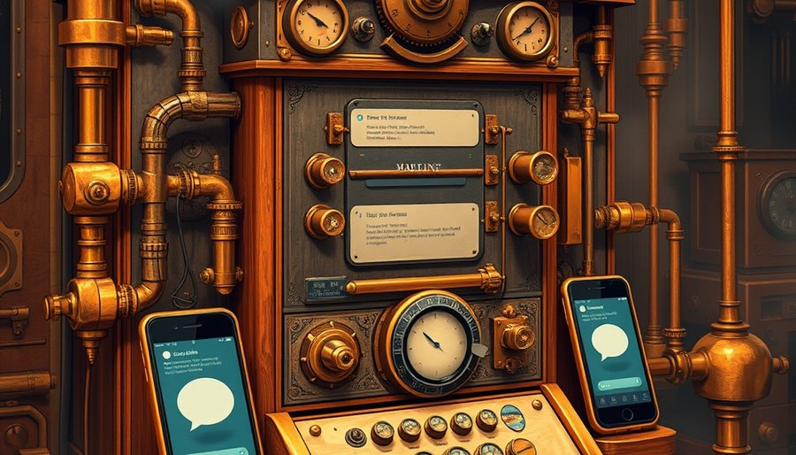

很多人把平台的问题简化成垄断高价或大数据杀熟，以为罚点款、拆分几个业务就能解决。罚款改变不了平台最根本的权力：它扣着你的数字资产当人质。你在微信上积累的社交关系，不是你的，是腾讯服务器里一堆带权重的数据表。你可以导出聊天记录，但导不出那张关系网。离开微信，所有联系人需要重新添加、重新建立群组，过去几年攒下的信任和互动痕迹全部归零。淘宝的信用分、抖音的粉丝关注列表，同理。经济学家管这叫转换成本，说白了就是人质。
平台手里还有第二件武器：封禁权。它可以选择性地拒绝互联互通。淘宝链接在微信里打不开，抖音视频不能直接分享到朋友圈，这些不是技术做不到，是故意筑起的壁垒。平台既是修路的人，又是设卡的人，还能自己上路跟别人比赛。它用封禁权把对手挡在流量大门外，再给自己的业务开绿灯。这不是市场竞争，这是圈地收税。
再加上第三件武器：流量裁判。平台决定把流量分给谁、怎么分、抽多少成，全靠暗箱算法。苹果商店抽30%，公众号文章能不能被推荐，直播间能不能上热门，规则不透明，裁判还亲自下场踢球。这三件武器合在一起，把平台从服务商变成了数字领土的统治者。它立规则，它执法，它收税，它还有自己的行政管辖范围。说它是二政府，一点不夸张。

拆掉这种权力的思路，不是没人试过。一百年前，电话公司也玩过同样的把戏。
20世纪初，美国贝尔系统垄断了电话网络。它拒绝接通竞争对手的用户，买断独立运营商，谁想跟贝尔的用户通话，就得用贝尔的网。结果是一个个电话孤岛。直到反垄断诉讼和《1996年电信法》强制要求运营商开放网络、互联互通，任何电话公司都不能拒绝转接对手的来电。你今天拿起手机打给任何人，不管对方用移动、联通还是电信，都能接通，就是这条法律逼出来的。电话公司从此退位成传输管道，竞争转向服务和价格，而不是靠封网。
互联网的底层基因本来也是开放的。你用的电子邮件，靠的是SMTP协议，它让Gmail用户能无缝给QQ邮箱发信。你打开任何一个网站，背后是HTTP协议，它让Chrome浏览器能访问全世界任何服务器，不管对方跑的是Apache还是Nginx。DNS解析域名，IP协议负责寻址，全是公开标准。如果当年因特网被某家公司私有化，今天给不同运营商的用户发邮件可能真的要交年费。
这条思路正在回到监管者的桌面上。欧盟《数字市场法》已经把WhatsApp、iMessage这类看门人即时通讯列进强制互通的清单。用户将来应该能从Signal给WhatsApp好友发消息，就像从联通打给移动一样自然。协议公共化、强制互联互通，不是技术空想，是人类历史上验证过的唯一成功范式。
范式有了，不等于落地没代价。拆掉平台的护城河，至少要面对三个真问题。
第一个是安全与开放的天然张力。微信今天能拦住大部分垃圾、诈骗、钓鱼信息，靠的是中心化审核和封闭接口。一旦向所有第三方工具全开放，黑产会指数级涌入。没有中心化治理的开放通信，极易沦为诈骗温床。电话网络开放了，但电话诈骗至今是顽疾。即时通讯开放，风险只多不少。最低安全标准怎么定，谁来执行，是个硬问题。
第二个是商业激励失衡。平台的海量存储、内容审核、安全投入，靠的是封闭生态的高额回报支撑。苹果的App Store审核团队，Meta的内容审查人力，微信的反垃圾系统，都是真金白银堆出来的。如果强制平台退化成纯管道，只能收一点接入费，谁来为这些公共成本付账？需要设计精巧的接入费补偿机制，而不是一句开放就好能带过。
第三个是跨国数字主权真空。如果一国单方面强制公共协议，而别国放任巨头野蛮生长，本国数字产业可能被过度束缚，失去国际效率。欧盟推DMA，美国和中国跟不跟？不跟，欧洲企业可能被捆住手脚；跟，又得协调标准。数字世界没有全球政府，主权博弈会让任何单边行动打折。
这些代价不是反对开放的理由。它们只是提醒：拆掉二政府之后，不能留下权力真空。那些曾经由平台包办的成本和秩序，需要有人接手。
回到开头那个场景。假设有一天，微信被强制开放协议，你可以把好友关系一键迁移到另一个社交App，淘宝信用分跟着你走，抖音粉丝列表可以同步到别的短视频平台。平台不能再封对手的链接，流量分配算法接受公共审计。平台真的退位成管道了。
然后呢？内容审核谁来做？诈骗信息谁拦截？纠纷谁仲裁？今天你骂平台管太多，明天你可能骂没人管。数字二政府的反面，不一定是数字乌托邦，可能是一个嘈杂、危险、需要你自己辨别一切的信息荒野。
这不是说不要拆。而是说，当平台被强制退位，那些曾经由它包办的成本和秩序，我们准备好自己承担了吗？这个问题没有现成答案。但它至少让一件事变得清楚：我们讨论的不是怎么罚平台，而是怎么重新分配数字世界的权力、责任和成本。
尾声
欧盟《数字市场法》的互通条款预计2027年落地，但WhatsApp和Signal之间如何实现端到端加密互通，技术细节仍在争吵。这条路走得通，但不会平坦。
小汪老师的成长观察笔记